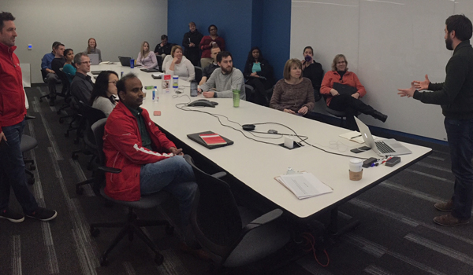

Adjacent Services
Public Speaking
I was invited to speak at the University of Madison Wisconsin E-Business Consortium. Our topic of conversation was Design Sprints and how we as a team incorporated them. The original plan for the talk as to speak for about 30 minutes. Do to interest from the audience, we were able to extended the conversation into a 2 hour event. It was a lot of fun sharing our process with others.
Management and Process Improvement
As a team, it's important to know what each other is doing so we can support the individual as well as team. In the spirit of continous improvement, I look for ways to make this effort easier for everyone involved. In the example below, I took an existing tool (Microsoft Teams) and adjusted it in a way to make it better suit needs. I added scripts that manipulated json in order to generate reports that could be reviewed by the team and sent to senior leadership for awareness.
Workshop Facilitation
I've facilitated many sessions on innovation, design thinking, and creative review. I enjoy engaging my audience through story telling and visual cues.
Ideation Warm-ups
In order to fuel a generative and divergent mindset, one must warm-up first or fear falling pray to the inevitable stall-out. That's why I believe in holding quick creative activities to get the room in the right frame of mind. The example below is from a series that I called "Jock Jams." We would rock out and try differnt activities to fuel our bigger challenges.